key terms:how a 3D scene is projected onto a 2D image plane

Primitives and Transformations¶
2D Points¶
- can be wirtten in inhomogeneous coordinates
- or in homogeneous coordinates
- projective space
Homogeneous vectors that differ only by scale are considered equivalent and define an equivalence class
- An inhomogeneous vector x could be converted to a homogeneous vector ->augmented vector
- Homogeneous points whose last element is \(0\) are called ideal points or points at infinity
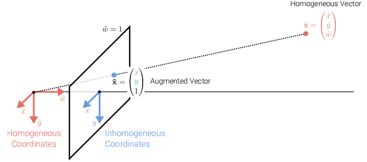
2D Lines¶
- using homogeneous coordinates \(\widetilde{l}=(a,b,c)^{T}\)
- normalize \(\tilde{l}\)
- line at infinity \(\tilde{l}_{\infty} = (0,0,1)^{T}\),which passes through all ideal points
Cross Product¶
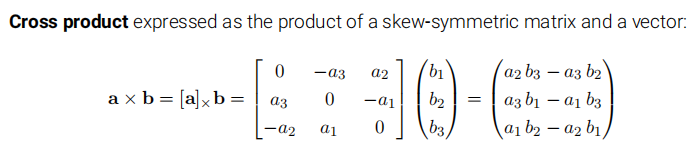
2D Line Arithmetic¶
- intersection of tow lines:\(\tilde{x} = \tilde{l}_1 \times \tilde{l}_2\)
- line joining two points:\(\tilde{l}=\tilde{x}_1 \times \tilde{x}_2\)
3D Points and Planes¶
- the same as case in 2D
3D Lines¶
- less elegent
- linear combination of two points
2D Transformations¶
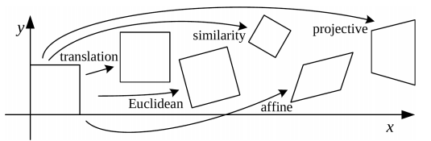
- the action of a projective transformation on a co-vector can be represented by the transposed inverse of the matrix
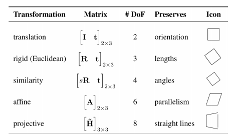
Direct Linear Transformation¶
We want a homography estimation using a set of 2D correspondences
- Homography estimation:find the relationship between two images of the same scene, but captured from different viewpoints
- 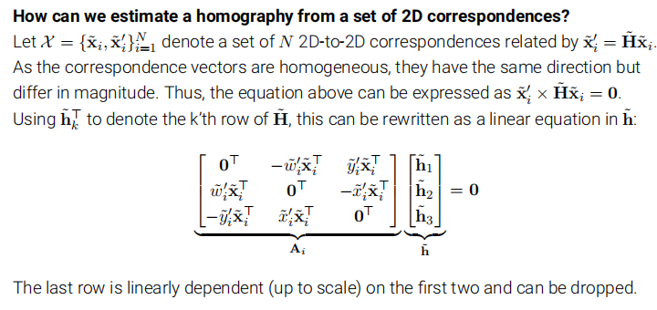
Stacking all equations into a \(2N \times 9\) dimensional matrix \(A\) leads to the constrained least squares problem,whose solution is the singular vector corresponding to the smallest singulat value of \(A\)(i.e.,the last column of \(V\) when decomposing \(A=UDV^T\)) derivation
Geometric Image Formation¶
Orthographic Projection¶
- The x and y axes of the camera and image coordinate systems are shared
- Light rats are parallel to the z-coordinate of the camera coordinate system
- During projection, the z-coordinate is dropped,x and y remain the same
 scaled orthorgraphy
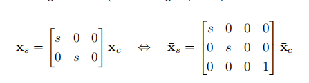
scaled orthorgraphy
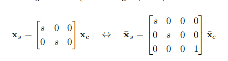
Perspective Projection¶
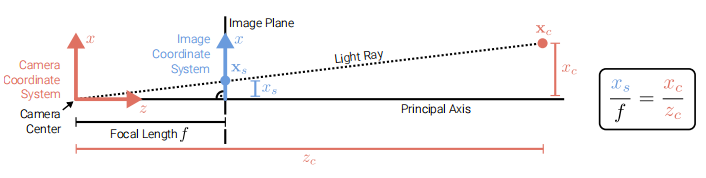 - The light ray passes through the camera center,the pixel \(x_s\) and the point \(x_c\) - Convention:the principal axis aligns with the z-axis - 3D points in camera coordinates are mapped to the image plane by dividing them by their z component and multiplying with thr focal length. - 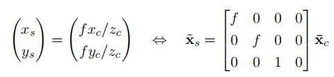
this projection is linear when using homogeneous coordinates
- To ensure positive pixel coordinates,a principal point offset is usually added,which moves the image coordinate system to the corner of the image plane. Now we can give the complete perspective projection model as follows: 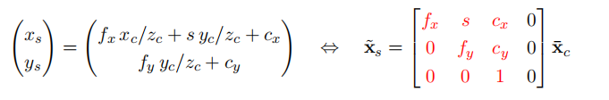
- The left \(3 \times 3\) submatrix is called calibration matrix \(K\)
- The parameters of \(K\) are called camera intrinsics
- The skew \(s\) arises due to the sensor not mouted perpendicular to the optical axis
- In practice,we often set \(f_x =f_y\) and \(s=0\)
Chaining Transformations¶
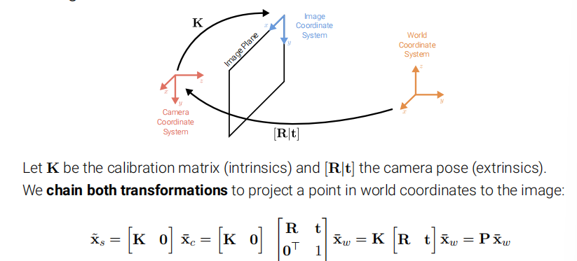
Full Rank Representation 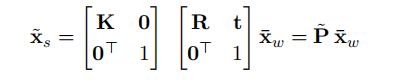 The homogeneous vector \(\tilde{x}_s\) is a 4D vector and must be normalized wrt. its 3rd entry to obtain inhomogeneous image pixels: \(\overline{x}_s = \tilde{x}_s / z_s = (x_s/z_s,y_s/z_s,1,1/z_s)^{T}\)
Photometric Image Formation¶
Discuss how an image is formed in terms of pixel intensities and colors
- Light is emitted by one or more light sources and reflected of refracted at surfaces of objects in the scene
Rendering Equation

\(n^Ts\) represents the inner product factor
-
Typical BRDFs have a diffuse and a specular component
- diffuse component scatters light uniformly in all directions
- specular component depends strongly on the outgoing light direction
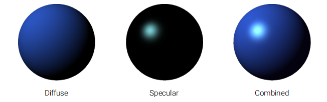
Why camera lenses?¶
- Large and very small pinholes result in image blur
- small pinholes require long shutter times,which leads to motion blur
Thin Lens Model¶
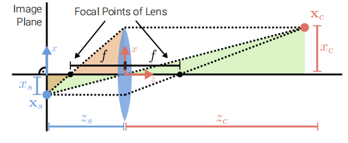 \(\frac{1}{z_s}+\frac{1}{z_c}=\frac{1}{f}\)
Depth of Field¶
- For \(z_c \rightarrow \infty\) ,we obtain \(z_s=f\)
- If the image plane is out of foucs,a 3D point projects to the circle of confusion c
- To control the size of \(c\),we change the lens aperture
- The allowable depth variation that limits the circle of confusion is called DOF and is a function of both the focus distance and the lens aperture
distance between the nearest and farthest objects that are acceptably sharp
- f-number is defined as \(N = \frac{f}{d}\)(\(d\): the aperture diameter)
Questions(Not Found in Searching Engine)¶
1.normalize \(\tilde{l} = (n_x,n_y,-d)^{T}\) why minus \(d\)?
2.DLT？ 3.Under orthography,structure and motion can be estimated simultaneously using factorization methods(e.g.,via svm) 4.The skew \(s\) arises due to the sensor not mouted perpendicular to the optical axis,only affects x axis?